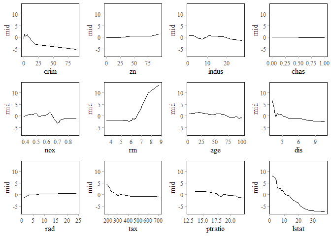

The goal of ‘midr’ is to provide a model-agnostic method for interpreting and explaining black-box predictive models by creating a globally interpretable surrogate model. The package implements ‘Maximum Interpretation Decomposition’ (MID), a functional decomposition technique that finds an optimal additive approximation of the original model. This approximation is achieved by minimizing the squared error between the predictions of the black-box model and the surrogate model. The theoretical foundations of MID are described in Iwasawa & Matsumori (2025) [Forthcoming], and the package itself is detailed in Asashiba et al. (2025).
Installation
You can install the released version of midr from CRAN with:
install.packages("midr")and the development version from GitHub with:
# install.packages("devtools")
devtools::install_github("ryo-asashi/midr")Examples
In the following example, we fit a random forest model to the Boston dataset included in ISLR2, and then attempt to interpret it using the functions of midr.
# load required packages
library(midr)
library(ggplot2)
library(gridExtra)
library(ISLR2)
library(ranger)
theme_set(theme_midr())
# split the Boston dataset
data("Boston", package = "ISLR2")
set.seed(42)
idx <- sample(nrow(Boston), nrow(Boston) * .75)
train <- Boston[ idx, ]
valid <- Boston[-idx, ]
# fit a random forest model
rf <- ranger(medv ~ ., train, mtry = 5)
preds_rf <- predict(rf, valid)$predictions
cat("RMSE: ", weighted.rmse(valid$medv, preds_rf))
#> RMSE: 3.351362The first step is to create a MID model as a global surrogate of the target model using interpret().
# fit a two-dimensional MID model
mid <- interpret(medv ~ .^2, train, rf, lambda = .1)
mid
#>
#> Call:
#> interpret(formula = yhat ~ .^2, data = train, model = rf, lambda = 0.1)
#>
#> Model Class: ranger
#>
#> Intercept: 22.446
#>
#> Main Effects:
#> 12 main effect terms
#>
#> Interactions:
#> 66 interaction terms
#>
#> Uninterpreted Variation Ratio: 0.016249
preds_mid <- predict(mid, valid)
cat("RMSE: ", weighted.rmse(preds_rf, preds_mid))
#> RMSE: 1.106746
cat("RMSE: ", weighted.rmse(valid$medv, preds_mid))
#> RMSE: 3.306111To visualize the main and interaction effects of the variables, apply ggmid() or plot() to the fitted MID model.
# visualize the main and interaction effects of the MID model
grid.arrange(
ggmid(mid, "lstat") +
ggtitle("main effect of lstat"),
ggmid(mid, "dis") +
ggtitle("main effect of dis"),
ggmid(mid, "lstat:dis") +
ggtitle("interaction of lstat:dis"),
ggmid(mid, "lstat:dis", main.effects = TRUE, theme = "Temps") +
ggtitle("interaction + main effects")
)
# visualize all main effects
grid.arrange(grobs = mid.plots(mid), nrow = 3)
mid.importance() helps to compute and compare the importance of main and interaction effects.
# visualize the MID importance of the component functions
imp <- mid.importance(mid)
grid.arrange(nrow = 1L,
ggmid(imp, "dotchart", theme = "Okabe-Ito") +
theme(legend.position = "bottom") +
ggtitle("importance of variable effects"),
ggmid(imp, "heatmap") +
theme(legend.position = "bottom") +
ggtitle("heatmap of variable importance")
)
mid.breakdown() provides a way to analyze individual predictions by decomposing the differences between the intercept and the predicted value into variable effects.
# visualize the MID breakdown of the model predictions
bd1 <- mid.breakdown(mid, data = train[1L, ])
bd9 <- mid.breakdown(mid, data = train[9L, ])
grid.arrange(nrow = 1L,
ggmid(bd1, "waterfall", theme = "Tableau 10", max.bars = 14L) +
theme(legend.position = "bottom") +
ggtitle("breakdown of prediction 1"),
ggmid(bd9, "waterfall", theme = "Tableau 10", max.bars = 14L) +
theme(legend.position = "bottom") +
ggtitle("breakdown of prediction 9")
)
mid.conditional() can be used to compute the ICE curves (Goldstein et al. 2015) of the fitted MID model, as well as the breakdown of the ICE curves by main and interaction effects.
# visualize the ICE curves of the MID model
ice <- mid.conditional(mid, "lstat")
grid.arrange(
ggmid(ice, alpha = .1) +
ggtitle("ICE of lstat"),
ggmid(ice, "centered", alpha = .1, var.color = dis > 3) +
ggtitle("c-ICE of lstat"),
ggmid(ice, term = "lstat:dis", var.color = dis > 3, alpha = .1) +
ggtitle("ICE of interaction with dis"),
ggmid(ice, term = "lstat:age", var.color = age, dots = FALSE) +
ggtitle("ICE of interaction with age")
)
References
[1] Iwasawa, H. & Matsumori, Y. (2025). “A Functional Decomposition Approach to Maximize the Interpretability of Black-Box Models”. [Forthcoming]
[2] Asashiba, R., Kozuma, R. & Iwasawa, H. (2025). “midr: Learning from Black-Box Models by Maximum Interpretation Decomposition”. https://arxiv.org/abs/2506.08338
[3] Goldstein, A., Kapelner, A., Bleich, J., & Pitkin, E. (2015). “Peeking Inside the Black Box: Visualizing Statistical Learning With Plots of Individual Conditional Expectation”. Journal of Computational and Graphical Statistics, 24(1), 44–65. https://doi.org/10.1080/10618600.2014.907095